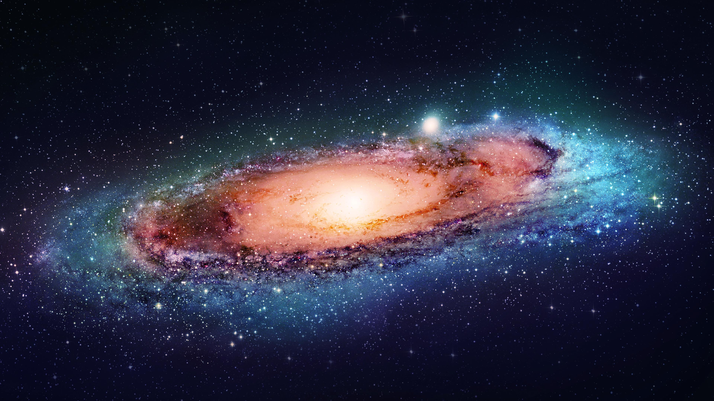

Istraži galaksiju
UniverseExplore

1. Svemirski teleskop Hubble dobio je ime po američkom astronomu
Edwinu Powellu Hubbleu. On je bio jedan od vodećih astronoma
modernog doba, a postavio je temelje fizikalne kozmologije.
2. Hubble je smješten na oko 570 kilometara visine, a Zemlju obilazi
pod nagibom od 28,5 stupnjeva. Kreće se brzinom od 28.000 kilometara
na sat, odnosno cijeli krug oko Zemlje napravi za 96 minuta.
Pretpostavlja se da je sveukupno prešao udaljenost od otprilike 6,5
milijardi kilometara.
3. Dugačak je 13,2 metara, a težak 11 tona. Lansiran je 1990. godine
kao rezultat suradnje između NASA-e i Europske svemirske agencije uz
pomoć space shuttlea Discovery. Energiju za rad dobiva iz solarnih
ploča postavljenih na njegovoj površini.
Svemirska letjelica lansirana 1970-ih, Voyager 1 i danas putuje i šalje podatke, daleko izvan okvira svoje početne, relativno pojednostavljene misije. Nastavite čitati kako biste saznali više o tome gdje je Voyager 1 danas, čemu nas uči o svemiru i kuda ide u budućnosti: Lansiran 1977. godine, 5. septembra obilježit će se 36. godišnjica lansiranja Voyagera 1. To ga čini jednim od najstarijih komada svemirske tehnologije koji je još uvijek u kontaktu sa Zemljom. 2. V1 je prešao preko 11 MILIJARDI milja. 11 milijardi milja je ekvivalent kruženju Zemlje 440.000 puta. Pa ipak, u smislu svjetlosnih godina, jedinice za mjerenje prostora koja je označena koliko svjetlost može putovati za godinu dana, V1 nije čak ni napustio susjedstvo. Biće potrebno 40.000 godina da V1 stigne na samo dve svetlosne godine udaljenosti od Sunca.
U jeku hladnoga rata Sjedinjene Američke Države požurile su prije SSSR-a poslati čovjeka na Mjesec kako bi pokazale svoju nadmoć u svemirskim letovima. NASA-ina misija Apollo 11 1969. godine ušla je povijest prvim korakom čovjeka na Mjesecu. U duhu proslave 50. obljetnice spuštanja čovjeka na Mjesec, u nastavku donosimo deset zanimljivosti vezanih uz misije Apollo. 1) Prvi čovjek koji je zakoračio na Mjesec bio je američki astronaut Neil Armstrong uz riječi «Ovo je mali korak za čovjeka, a veliki za čovječanstvo». 2) Na prvim slikama čovjeka na Mjesecu uglavnom se pojavljuje Buzz Aldrin, drugi čovjek koji je kročio na Mjesec, zato što je prvi čovjek na Mjesecu, Neil Armstrong, bio taj koji je nosio fotoaparat. 3) Djevojačko prezime majke Buzza Aldrina bilo je Moon, u prijevodu Mjesec. 4) Jedini ljudi koji su kročili na Mjesec bili su astronauti NASA-inih misija Apollo od 1969. do 1972. godine.